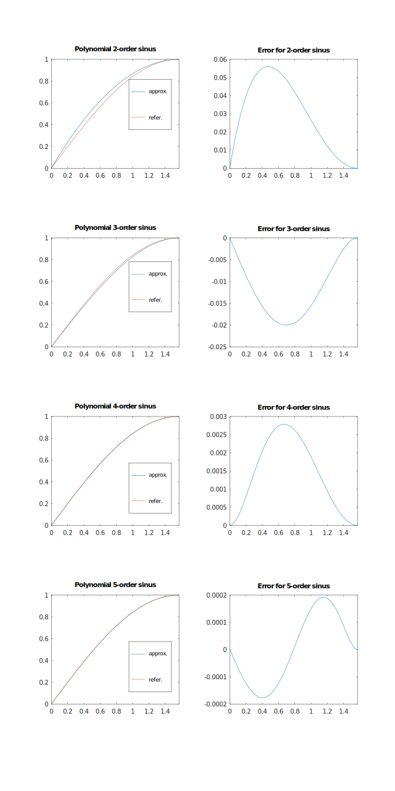

Generic cosine function backed by std cos
Generic sine function backed by std sin
Generic cosine function using polynomial interpolation
Check that function is like a sine or cosine
Check that number can be used as polynomial order for trigonometry approximation
Get PI constant in any angle units
Get PI constant in any angle units
Generic sine function using polynomial interpolation
Generic trigonometry functions
Trigonometric functions which uses polynomial approximation and compatible with both floating point and fixed point types.
Depending from polynomial order that functions is differ in terms of precision and speed: functions of higher order has more precision and lower speed elsewhere functions of lower order has less precision and higher speed.
You can select best-fit function according to specific use case.

2nd-order (quadratic) interpolation
sin(x) = \frac{4}{π} x - \frac{4}{π^2} x^2 = (\frac{4}{π} - \frac{4}{π^2} x) x
let x = \frac{π}{2} z
then sin(\frac{π}{2} z) = 2 z - z^2 = (2 - z) z
3rd-order (cubic) interpolation
sin(x) = \frac{3}{π} x - \frac{4}{π^3} x^3 = (\frac{3}{π} - \frac{4}{π^3} x^2) x
let x = \frac{π}{2} z
then sin(\frac{π}{2} z) = \frac{3 z - z^3}{2} = \frac{(3 - z^2) z}{2} = (\frac{3}{2} - \frac{z^2}{2}) z
4th-order interpolation
sin(x) = cos(x - \frac{π}{2})
let x = \frac{π}{2} z
then sin(\frac{π}{2} z) = cos(\frac{π}{2} (z - 1))
cos(\frac{π}{2} z) = 1 - (2 - \frac{π}{4}) z^2 + (1 - \frac{π}{4}) z^4 = 1 - ((2 - \frac{π}{4}) - (1 - \frac{π}{4}) z^2) z^2